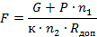

МИНИСТЕРСТВО
МОНТАЖНЫХ И СПЕЦИАЛЬНЫХ
СТРОИТЕЛЬНЫХ РАБОТ СССР
ИНСТРУКЦИЯ
ПО МОНТАЖУ КОМПРЕССОРОВ И НАСОСОВ
ВСН 394-78
ММСС СССР
Москва - 1979
ОГЛАВЛЕНИЕ
|
УТВЕРЖДАЮ: Заместитель Министра монтажных и специальных строительных работ СССР К.К.ЛИПОДАТ 20.ХII.78 г. |
|
Разработана Государственным институтом по проектированию технологии монтажа предприятий химической промышленности (Гипрохиммонтажем) |
|
|
Главный инженер |
М.А. Льянов |
|
Начальник технологического отдела |
Я.И. Шварц |
|
ВНЕСЕНА Главным управлением по монтажу технологического оборудования предприятий химической промышленности |
|
|
Главный инженер |
А.В. Анохин |
|
СОГЛАСОВАНА С: |
|
|
Госстроем СССР (письмо № 1-2844 от 22.08.78) |
|
|
Минхимпромом СССР (письмо № 05-5-4/132 от 20.01.73 г.) |
|
|
Миннефтехимпромом СССР (письмо № 15/3-30-1608 от 14.12.77 г.) |
|
|
Минхиммашем (письма № 5-5-132/65-2361 от 22.11.76 г. и № 6-64/2851 от 10.11.76 г.) |
|
|
Главным техническим управлением Минмонтажспецстроя СССР |
|
|
Заместитель начальника |
Г.А. Сукальский |
|
УТВЕРЖДЕНА И ВВЕДЕНА В ДЕЙСТВИЕ Министерством монтажных и специальных строительных работ СССР. |
|
|
Заместитель министра |
К.К. Липодат |
Адрес для запросов: 107076, Москва, Б-76, Колодезный пер., 14, Гипрохиммонтаж.
|
Министерство |
Ведомственные |
ВСН 394-78 Минмонтажспецстрой СССР |
|
Инструкция по
монтажу |
Взамен: |
1.1. Требования настоящей инструкция должны выполняться при производстве и приемке работ по монтажу стационарных воздушных и газовых компрессоров поршневых, центробежных и следующих насосов (насосных агрегатов):
крупных динамических вертикальных (центробежных и осевых);
крупных динамических горизонтальных;
средних и мелких динамических горизонтальных (центробежных, осевых, вихревых и центробежно-вихревых;
объемных роторных (винтовых, коловратных, шестеренных, шиберных);
объемных поршневых и плунжерных приводных;
паровых прямодействующих.
1.2. Инструкция разработана на основе главы СНиП по монтажу технологического оборудования и учитывает условия поставки компрессоров по ТУ 26-12-95-70 "Компрессоры. Общие требования к поставке. Технические условия", ОСТ 26-12-1279-75 "Компрессоры поршневые оппозитные мощностью свыше 250 кВт. Общие технические требования" и условия поставки насосов по ОСТ 26-1347-76 "Насосы. Общие технические требования".
|
Внесены институтом |
Утверждены |
Срок введения |
1.3. При монтаже необходимо руководствоваться требованиями, изложенными в настоящей инструкции, инструкциях заводов-изготовителей, "Правилами устройства и безопасной эксплуатации стационарных компрессорных установок, воздухопроводов и газопроводов", утвержденных Госгортехнадзором СССР 7 декабря 1971 г., "Правилами устройства и безопасной эксплуатации поршневых компрессоров, работающих на взрывоопасных и токсичных газах", утвержденных Госгортехнадзором СССР 28 декабря 1970 года, OCT 26-1141-74 "Основные требования к установке и эксплуатации насосов вне помещений на химических, нефтехимических и нефтеперерабатывающих производствах", а также главами третьей части СНиП по производству и приемке работ, в том числе:
по монтажу технологического оборудования;
по бетонным и железобетонным конструкциям монолитным и сборным;
по технике безопасности в строительстве;
по электротехническим устройствам.
2.1. На фундаменте необходимо разметить и выровнять площадки для пластин под регулировочные винты и уложить на них по одной пластине. Отклонение поверхности площадок от горизонтали (уклон) допускается не более 10 мм на 1 м, а высотные отметки верха пластин не должны отличаться более чем на 10 мм.
2.2. На поверхности фундамента, подлежащей подливке бетонной смесью, должна быть выполнена насечка.
2.3. Для предварительной установки оборудования и заводки фундаментных болтов в станину на фундамент между пластинами следует уложить деревянные брусья. Перед окончательной установкой оборудования на регулировочные винты брусья следует убрать.
2.4. Стержни фундаментных болтов должны быть очищены от грязи, ржавчины, окалины. Мыть стержни болтов керосином или соляровым маслом, а также смазывать их машинным маслом не разрешается.
При загрязнении резьбу нужно очистить, промыть растворителем, протереть, смазать консистентным маслом и прогнать гайку.
2.5. Законсервированные поверхности оборудования перед монтажом должны быть очищены от консервирующих покрытий и смазок (которые следует удалять деревянными скребками), протерты ветошью, смоченной уайт-спритом или бензином, а затем чистыми сухими тряпками. Таким же образом должны быть удалены масляные пятна с опорных поверхностей, соприкасающихся при подливке с бетоном. Если опорные поверхности окрашены, краску необходимо удалить металлическими щетками.
3.1. При выверке и креплении необходимо обеспечить совмещение в плане осей оборудования с осями фундамента, требуемый зазор для подливки, высотную отметку и горизонтальность. Если нет специальных указаний предприятия-изготовителя, то допускаются:
|
смещение в плане осей оборудования от осей фундамента |
10 мм; |
|
отклонение от проектной высотной отметки отклонение от горизонтали |
10 мм; |
|
отклонение от горизонтали |
0,3 на 1 м. |
Горизонтальность следует проверять брусковым или рамным уровнем, который устанавливать на обработанную базовую поверхность или контрольную площадку.
3.2. Выверку компрессоров можно производить:
регулировочными винтами (если они предусмотрены в конструкции опорной части);
инвентарными установочными домкратами;
установочными гайками на забетонированных фундаментных болтах без упругих элементов;
то же, с упругими элементами;
пакетами металлических подкладок (в случаях, технически обоснованных предприятием-изготовителем).
Выверку насосов производят регулировочными винтами, предусмотренными в их опорных частях.
3.3. Выверку компрессоров и насосов регулировочными винтами производят в следующем порядке:
устанавливают по осям в плане;
регулируют высоту и горизонтальность. Выверенное оборудование должно опираться на все регулировочные винты (проверяют щупом 0,1 мм). Положение винтов фиксируют гайками;
для предотвращения сцепления с бетонной смесью подливки регулировочные винты изолируют бумагой, толем или тонким слоем густой смазки.
3.4. Выверку инвентарными установочными домкратами производят в следующем порядке:
устанавливают по осям в плане;
регулируют по высоте и горизонтали с помощью установочных домкратов (выверенное оборудование должно опираться на все установочные домкраты), проверяют щупом 0,1 мм, который по всему периметру прилегания не должен заходить более, чем на 3 мм;
устанавливают опалубку по периметру фундамента, а также вокруг установочных домкратов (для удаления их после подливки);
подливают бетонной смесью;
снимают опалубку по достижении бетоном подливки проектной прочности;
опускают грузовые площадки установочных домкратов и удаляют домкраты;
ниши в подливке после удаления установочных домкратов заполняют бетонной смесью.
3.5. Выверку оборудования непосредственно установочными гайками выполняют в следующем порядке:
устанавливают по высоте и горизонтали с помощью установочных гаек фундаментных болтов;
фиксируют на время подливки крепежными гайками;
устанавливают опалубку по периметру фундамента, а также вокруг фундаментных болтов в зазоре между фундаментом и оборудованием для обеспечения доступа к установочной гайке после подливки;
подливают бетонной смесью;
снимают опалубку по достижении бетоном подливки проектной прочности и навинчивают установочные гайки на фундаментные болты для образования зазора между гайками и опорной поверхностью оборудования.
Выверку оборудования установочными гайками с упругими элементами (в качестве упругого элемента применяют металлические тарельчатые шайбы) выполняют в следующем порядке:
навинчивают установочные гайки и одевают упругие элементы на фундаментные болты до уровня, при котором верх упругих элементов на 2 - 3 мм превышает проектную отметку установки;
устанавливают оборудование на упругие элементы и выверяют регулированием затяжки крепежных гаек.
3.6. Выверку оборудования, установленного на пакеты металлических, подкладок (в случаях, технически обоснованиях предприятием-изготовителем) выполняют в следующем порядке:
изготовляют подкладки и укладывают их в пакеты на выровненные площадки фундамента;
устанавливают оборудование на пакеты подкладок и проверяют по осям в плане;
регулируют по высоте и горизонтали путем подбора толщины и количества подкладок в пакетах.
Пакеты подкладок должны быть размещены на возможно близком расстоянии от фундаментных болтов.
Площадь подкладок определяют по формуле

где
F - площадь поверхности одной подкладки, см2;
Р - усилие (осевое) затяжки фундаментного болта, кгс;
G - масса монтируемого оборудования, кг;
п1 - количество фундаментных болтов, шт.;
п2 - количество пакетов подкладок шт.;
к - коэффициент прилегания подкладки к фундаменту (принимают 0,6);
Rдоп - допускаемая нагрузка на бетон, кгс/см2.
Допускаемая нагрузка на фундамент при установке оборудования на подкладках для бетона, марки 150 равна 75 кгс/см2, для бетона марки 200 - 85 кгс/см2.
Количество пакетов подкладок, назначают минимальным исходя из условий:
обеспечения устойчивого положения оборудования на период до затвердения подливки;
исключения деформаций опорных частей оборудования под действием его собственной массы и усилий затяжки фундаментных болтов.
Рекомендуемые размеры стальных или чугунных подкладок приведены в табл. 1.
|
Масса компрессора, т |
Размеры подкладок, мм |
|
Менее 30 |
150×80 |
|
30 - 50 |
180×90 |
|
50 - 100 |
200×100 |
|
100 и более |
240×120 |
3.7. Окончательно выверенное положение установленного оборудования на время подливки фиксируют частичной затяжкой гаек фундаментных болтов, расположенных вблизи опорных элементов, усилием одной руки рабочего (в среднем 30 кгс), приложенным к стандартному гаечному ключу без надставки. Гайки остальных фундаментных болтов навертывают до соприкосновения с опорной частью оборудования.
Если оборудование выверяют установочными гайками фундаментных болтов с помощью упругих элементов, то процесс предварительной затяжки совмещают с выверкой.
3.8. После окончания подливки и до затвердения бетонной смеси следует выполнить контрольную проверку выверенного положения оборудования.
3.9. Окончательную затяжку гаек фундаментных болтов разрешается выполнять после достижения бетоном подливки не менее 50 % проектной прочности. Величину крутящего момента при окончательной затяжке фундаментных болтов определяют по табл. 2. Регулировочные винты перед окончательной затяжкой гаек фундаментных болтов отвертывают на 1 - 2 оборота.
|
Диаметр резьбы болта, мм |
Крутящий момент, кгс·м |
|
12 |
1,2 - 2,4 |
|
16 |
3 - 6 |
|
20 |
3 - 10 |
|
24 |
13 - 25 |
|
30 |
30 - 55 |
|
36 |
60 - 95 |
|
42 |
100 - 150 |
|
48 |
110 - 230 |
|
56 |
220 - 370 |
|
64 |
400 - 600 |
3.10. Оборудование, фундаментные болты которого устанавливают в колодцы, предварительно выверяют по высоте я в плане, затем колодцы заполняют бетонной смесью до уровня 100 - 150 мм ниже поверхности фундамента. Окончательную выверку и частичную затяжку фундаментных болтов следует производить после достижения бетоном в колодцах не менее 50 % прочности, но не ранее, чем через 7 суток после подливки.
3.11. До окончательной затяжки гаек фундаментных болтов производить работы, которые могут вызвать нарушение выверенного положения оборудования, запрещается.
3.12. Компрессорные и насосные агрегаты, не имеющие общей фундаментной штаты или рамы и поступающие на монтаж блоками (компрессор, насос, редуктор, электродвигатель) монтируют последовательно.
Монтаж агрегата с редуктором начинают с редуктора, его выверяют и закрепляют на фундаменте в первую очередь; безредукторный агрегат начинают монтировать с машины большей массы; агрегат с турбоприводом - с турбины; агрегат с гидромуфтой (без редуктора) - с гидромуфты (если нет специальных указаний предприятия-изготовителя).
Выверка всех машин агрегата, кроме базовых, заключается в обеспечении, горизонтальности в направлении, перпендикулярном их осям, и соосности с базовой машиной в центровке валов по полумуфтам.
3.13. Центровку валов по полумуфтам выполняют в следующем порядке:
устанавливают заданное расстояние между машинами;
закрепляют на полумуфтах приспособление для проверки соосности;
записывают показания в начальном положении проверяемых валов;
поворачивают одновременно валы обеих машин на 90, 180, 270 и 360° и записывают замеры в каждом положении.
Центровка валов машин компрессорного агрегата считается правильной, если разности диаметрально противоположных замеров перекоса и параллельного смещения осей не превышает величин, приведенных в табл. 3 (если нет специальных указаний предприятия-изготовителя).
|
Частота вращения вала (ротора), об/мин |
Допускаемые отклонения центровки полумуфт (при замерах на диаметре 300 мм), мм |
||
|
муфта |
|||
|
жесткая |
упругая пальцевая |
зубчатая |
|
|
До 750 |
0,04 |
0,4 |
0,5 |
|
-"- 1500 |
0,04 |
0,3 |
0,4 |
|
-"- 3000 |
0,04 |
0,2 |
0,25 |
|
Свыше 3000 |
0,04 |
0,1 |
0,1 |
3.14. При сборке упругих муфт соединительные пальцы должны входить плотно от руки в отверстия ведущей полумуфты, а резиновые или кожаные кольца пальцев - входить в отверстии ведомой полумуфты свободно, без деформации. Зазор между кольцами и отверстиями должен быть одинаковым у всех пальцев.
3.15. При монтаже вертикальных насосов необходимо обеспечить:
вертикальность общей линии осей сопряженных валов насоса, промежуточного вала и электродвигателя (проверку выполняют с помощью четырех струн и микрометрического нутромера или рамного уровня);
требуемые зазоры между ротором и статором электродвигателя, а также в подшипниках насоса и электродвигателя.
Допускаемые отклонения (если нет специальных указаний предприятия-изготовителя):
|
Вид измерения |
Размеры |
|
Отклонения от вертикали общей линии осей валов |
0,02 мм на 1 м |
|
Зазоры в направляющих подшипниках электродвигателя |
0,1 - 0,15 мм |
|
Неравномерность зазоров между ротором и статором электродвигателя |
5 % величины зазора |
|
Зазоры в подшипниках вала насоса |
0,08 - 0,1 мм |
3.16. После центровки и соединения полумуфт валов необходимо проверить возможность свободного вращения ротора.
3.17. Маслопроводы, поступающие на монтаж не закрепленными на оборудовании, перед монтажом необходимо протравить (см. приложение).
3.18. Смонтированные маслопроводы должны прилегать к фундаменту и установленному оборудованию.
3.19. Плотность соединений системы смазки должна бить проверена при промывке ее маслом от масляного насоса. Одновременно необходимо проверить поступление масла ко всем смазываемым точкам. По окончании промывки проверяют чистоту масла (путем лабораторного анализа) и фильтрующих элементов масляных фильтров.
3.20. Внутренние поверхности трубопроводов, по которым перекачиваемая жидкость или газ поступают в рабочие полости оборудования, до установки должны быть очищены ершами и протерты тряпками.
3.21. Передача нагрузок от трубопроводов на патрубки оборудования не допускается.
3.22. Трубопроводы разрешается присоединять к оборудованию только после его выверки и окончательного закрепления к фундаменту.
Допускается непараллельность фланцев на каждые 150 мм диаметра:
|
Рабочее давление, кгс /см2 |
Допуск не более, мм |
|
До 16 |
0,15 |
|
Свыше 16 |
0,1 |
3.23. После присоединения трубопроводов следует повторно проверить центровку валов агрегата.
4.1. Смонтированные компрессоры и насосы должны быть подвергнуты индивидуальным испытаниям.
4.2. К началу испытаний необходимо:
уложить чистые полы и закончить отделочные работы в помещении машинного зала или на открытой площадке установки оборудования;
уложить перекрытие кабельных и трубопроводных каналов вокруг агрегата в соответствии с проектом;
смонтировать систему вентиляции машинного зала;
смонтировать, испытать, промыть всасывающий и нагнетательный трубопроводы насосов с фильтрами, обратными и предохранительными клапанами и арматурой;
очистить приточную камеру компрессора от ржавчины, грязи и пыли;
смонтировать, испытать и продуть всасывающий и нагнетательный трубопроводы компрессоров с фильтрами, обратными и предохранительными клапанами и арматурой с помощью постороннего источника сжатого воздуха до выхода из системы воздуха без механических примесей;
смонтировать и опробовать системы маслосмазки, водяного охлаждения и канализации;
смонтировать системы автоматического управления, контроля, сигнализации и защиты;
установить все контрольно-измерительные приборы;
подвести электропитание и проверить готовность электрической части агрегата;
установить защитные кожухи и ограждения;
очистить площадки обслуживания от посторонних предметов и мусора.
4.3. Испытания агрегата необходимо производить совместно с испытаниями системы автоматического управления, контроля, сигнализации и защиты, если эти системы предусмотрены проектом.
4.4. До начала испытаний необходимо отдельно выполнить холостую обкатку электродвигателя. Обкатка должна продолжаться до установления нормальной температуры подшипников, но не менее 2 ч.
4.5. Компрессорный агрегат можно поставить на испытание при наличии актов и замеров, занесенных в монтажный формуляр (табл. 4).
|
Тип компрессора |
Актируемые работы |
Замеры, вносимые в монтажный формуляр |
|
1 |
2 |
3 |
|
Поршневой |
Механическая и химическая очистка, промывка и прокачка масляной системы, поступающей на монтаж в разобранном виде |
Горизонтальность рам в обоих направлениях. Горизонтальность направляющих фонарей, соосность крейцкопфных направляющих и расточек цилиндров |
|
Очистка и продувка всасывающих и межступенчатых трубопроводов и аппаратов |
Радиальные и осевые зазоры в коренных и шатунных подшипниках |
|
|
Подготовка электродвигателя в соответствии с требованиями СНиП III-33-76 |
Зазоры между крейцкопфами и верхними направляющими; линейные величины вредных пространств |
|
|
Центробежный |
Механическая и химическая очистка промывка и прокачка масляной системы. |
Центровка валов по полумуфтам |
|
Очистка всасывающего трубопровода и камеры фильтров от загрязнений |
Горизонтальность компрессора, редуктора и электродвигателя, центровка валов по полумуфтам, величины радиальных и осевых зазоров подшипников |
|
|
Ротационный пластинчатый |
Зазор в лабиринтовых уплотнениях; окончательная проверка горизонтальности компрессора в обоих направлениях; центровка валов по полумуфтам |
4.6. В процессе подготовки к испытаниям необходимо проверить:
затяжку гаек фундаментных болтов, наличие и исправность контрольно-измерительных приборов, наличие и исправность ограждений;
подготовку электродвигателя в соответствии с требованиями главы СНиП III-33-76;
правильность и надежность установки заглушек;
наличие и уровень масла в системе смазки;
свободное вращение ротора (вала) поворотом на 1 - 2 оборота;
поступление смазки к губчатым соединительным муфтам;
работу системы охлаждения агрегата, температуру и напор охлаждающей воды;
открыты или закрыты задвижки и вентили на основных и вспомогательных трубопроводах;
вручную срабатывание противопомпажных и других защитных устройств (если такие имеются);
затяжку резьбовых соединений;
правильность направления вращения ротора кратковременным включением электродвигателя (толчком).
После повторной проверки центровки валов и установления правильного направления вращения ротора электродвигателя собрать муфтовые соединения агрегата.
4.7. Индивидуальные испытания центробежных компрессоров выполняют на воздухе, без подпора на линии нагнетания.
Индивидуальные испытания поршневых компрессоров заключаются в работе вхолостую, Воздушные поршневые компрессоры (за исключением дожимающих) подвергают, кроме того, индивидуальным испытаниям под нагрузкой при номинальном давлении нагнетания.
Индивидуальные испытания насосов всех типов заключаются в работе без заполнения жидкостью - вхолостую (если это разрешено заводской технической документацией).
4.8. Индивидуальные испытания вхолостую состоят из таких видов работ:
пробных испытаний с остановками для проверки работы узлов и устранения неполадок;
заключительного непрерывного испытания вхолостую в течение 30 мин (не менее). Поршневые компрессоры испытывают вхолостую при снятых клапанах или свободном выходе воздуха аз нагнетательного патрубка.
4.9. В результате испытания вхолостую должны быть обеспечены:
спокойная работа агрегата баз стуков и чрезмерного шума;
нормальная работа подшипников, при которой их температура независимо от продолжительности работы не будет превышать величины, указанной в технической документации предприятия-изготовителя. При отсутствии специального устройства для замера температуры работу подшипников следует контролировать по температуре масла, отекающего после смазки подшипника;
устойчивое давление масла в циркуляционной системе смазки, соответствующее указаниям предприятия-изготовителя, надежная блокировка электропитания двигателя компрессора с приборами давления масла;
отрегулированная работа перепускного клапана маслосистемы;
бесперебойное поступление масла во все места смазки цилиндров и сальников (утечка масла через соединения маслопроводов и крышки не допускается);
бесперебойная работа системы водяного охлаждения;
нормальная работа уплотнения вала.
4.10. Индивидуальные испытания компрессоров под нагрузкой состоят из:
пробных испытаний с постепенным увеличением давления нагнетания и остановками для проверки работы узлов и устранения неполадок;
непрерывного испытания под нагрузкой.
Внутренние полости аппаратов и трубопроводов, по которым воздух поступает в цилиндры компрессоров, должны быть очищены и продуты.
Испытание компрессора с давлением нагнетания, превышающим рабочее, не допускается.
4.11. В результате испытания компрессорного агрегата под нагрузкой (кроме соблюдения требований, приведенных в п. 4.9) должны быть обеспечены:
температура и давление нагнетания по ступеням в пределах указаний технической документации предприятия-изготовителя;
отсутствие пропусков через сальники и уплотнения;
нормальная работа системы автоматического управления, регулирования, сигнализации и защиты.
Давление нагнетания, если нет специальных указаний предприятия-изготовителя, следует повышать в течение 4 ч поэтапно: через каждый 1 ч на 25 % рабочего давления.
Переход к каждому следующему этапу с большим давлением разрешается после устранения всех неполадок, обнаруженных при испытании по предыдущему этапу.
4.12. После испытания компрессора под нагрузкой следует проверить затяжку всех гаек фундаментных болтов.
4.13. Последовательность операций при пуске, допускаемое количество запусков подряд и необходимые интервалы времени между ними, последовательность увеличения продолжительности пробных испытаний, продолжительность заключительного непрерывного испытания вхолостую и под нагрузкой и режим испытаний должно определить предприятие-изготовитель.
4.14. По окончании индивидуальных испытаний компрессоры и насосы передают заказчику для комплексного опробования по акту, который одновременно является актом об окончании монтажных работ.
4.15. При испытании под нагрузкой поршневых компрессоров, имеющих на нагнетательной линии ресивер, искусственное сопротивление для образования подпоре на линии нагнетания необходимо создавать задвижкой, расположенной по ходу воздуха за ресивером.
4.16. Испытание на воздухе компрессоров, предназначенных для сжатия газа с плотностью, меньшей плотности воздуха, следует проводить в соответствии со специальными указаниями предприятия-изготовителя.
4.17. В процессе испытания центробежных компрессоров необходимо проверить и отрегулировать системы противопомпажной защиты и осевого сдвига ротора.
4.18. Вибрация подшипников центробежного компрессора в зависимости от числа оборотов (если нет специальных указаний предприятия-изготовителя) не должна превышать величин, указанных ниже.
|
Частота вращения ротора (число оборотов в минуту), до |
|||||
|
90 |
1500 |
2400 |
3000 |
5000 |
7200 и более |
|
Допустимая амплитуда вибрации, мм |
|||||
|
0,14 |
0,10 |
0,07 |
0,05 |
0,02 |
0,01 |
РЕКОМЕНДАЦИИ
по протравке маслопроводов, поступающих на монтаж не закрепленными на
оборудовании
Травление маслопроводов осуществляют для их очистки от химических соединений, снижающих качество смазочного масла.
Перед травлением внутренние поверхности маслопроводов необходимо по возможности очистить от механических загрязнений обстукиванием или протаскиванием ершей.
Травление рекомендуется выполнять раствором не ядовитой, не токсичной и не имеющей ожоговых свойств ортофосфорной кислоты (Н3РО4); при травлении им не нужны нейтрализация, добавление ингибитора и промасливание.
Маслопроводы перед травлением собирают при помощи гибких шлангов в кольцевую плеть, подключают к промывочной установке и промывают в течение 8 - 10 ч 15 - 20 %-ным раствором Н3РО4, нагретым до 50 °С, при этом остатки механических загрязнений и ржавчины оседают в промывочном баке.
После травления маслопроводы, промывают (пассивируют) 2 % - ным раствором Н3РО4 в течение 1 - 1,5 ч, в результате чего на внутренней поверхности труб образуется защитный слой против вторичной коррозии.
Промытые маслопроводы высушивают горячим воздухом. В таблице показано количество кг Н3Р04 на 1000 л воды, необходимое для приготовления травильного и пассивирующего растворов.
|
Исходная плотность Н3РО4 |
Заданная концентрация раствора и его плотность, г/см3 |
||||||
|
Концентрация, % |
Плотность, г/см3 |
2 % 1,008 |
15 % 1,082 |
20 % 1,113 |
|||
|
кг |
л |
кг |
л |
кг |
л |
||
|
30 |
1,181 |
67 |
57 |
540 |
457 |
742 |
630 |
|
70 |
1,526 |
29 |
19 |
232 |
152 |
318 |
208 |
|
80 |
1,633 |
25 |
15 |
203 |
124 |
278 |
170170 |
|
100 |
1,88 |
20 |
11 |
162 |
86 |
222 |
118 |